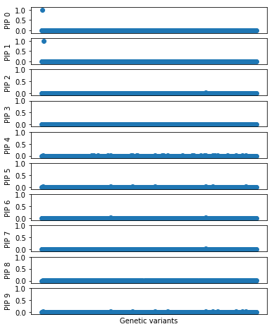
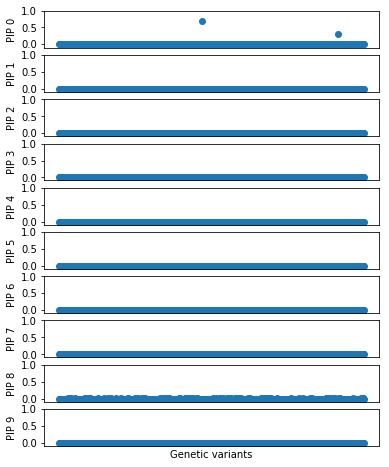

Fine mapping evaluation
Table of Contents
Idealized simulation
Sanity check: Simulate from a linear model without LD:
\[ f_j \sim U(0.01, 0.5) \] \[ x_{ij} \sim Binomial(2, f_j) \] \[ \beta_j \mid z_j \sim N(0, 1) \] \[ y \sim N(X \beta, \frac{1}{h^2}\left(V[X\beta] - 1 \right)) \]
with sse.simulation.simulation(p=1000, pve=0.15, annotation_params=[(10, 1)], seed=0) as s: x, y = s.sample_gaussian(n=500) x = x.astype('float32') y = y.reshape(-1, 1).astype('float32')
m = sse.model.GaussianSSE().fit(x, y, num_effects=10, max_epochs=10) pd.DataFrame(m.trace, columns=['elbo', 'error', 'kl_z', 'kl_b'])
elbo error kl_z kl_b
0 -1449.638828 -1401.565700 18.646638 29.426490
1 -1449.405263 -1402.241986 17.744773 29.418504
2 -1449.400790 -1402.299415 17.687170 29.414205
3 -1449.400519 -1402.297357 17.689199 29.413963
4 -1449.400478 -1402.294946 17.691399 29.414133
m.plot('idealized-fit.png')

Realistic simulation
Sanity check: Use GEUVADIS genotypes, put only one causal variant.
gene_info = pd.read_table('/home/aksarkar/projects/singlecell-qtl/data/scqtl-genes.txt.gz').set_index('gene') gene_info.head()
chr start end name strand source
gene
ENSG00000000003 hsX 99883667 99894988 TSPAN6 - H. sapiens
ENSG00000000005 hsX 99839799 99854882 TNMD + H. sapiens
ENSG00000000419 hs20 49551404 49575092 DPM1 - H. sapiens
ENSG00000000457 hs1 169818772 169863408 SCYL3 - H. sapiens
ENSG00000000460 hs1 169631245 169823221 C1orf112 + H. sapiens
Take a subset of SNPs from a typical cis-window (100kb rather than 1MB)
def read_genotypes(chrom, start, end): vcf = "/project/compbio/geuvadis/genotypes/GEUVADIS.chr{}.PH1PH2_465.IMPFRQFILT_BIALLELIC_PH.annotv2.genotypes.vcf.gz".format(chrom) x = [] for record in tabix.open(vcf).query(str(chrom), start, end): dose = [_.split(':')[2] if _ != '.' else -1 for _ in record[9:]] x.append([float(_) if _ != '.' else -1 for _ in dose]) return np.array(x)
Open problem: setting PVE in the simulation. If the true causal variant is rare (minimum MAF we consider is 0.01), then it's undetectable even with unrealisically large PVE.
To get around this, use our previous simulation generating epigenomic annotations to generate a "high MAF" annotation, and draw the causal variant from SNPs with that annotation.
x = read_genotypes(1, gene_info.loc['ENSG00000000457', 'start'], gene_info.loc['ENSG00000000457', 'start'] + int(1e5)).T x = np.ma.masked_equal(x, -1) # We will treat the dosages as the ground truth, so this is fine x = x.filled(x.mean()) with sse.simulation.simulation(p=x.shape[1], pve=0.15, annotation_params=[(1, 1)], seed=1) as s: s.estimate_mafs(x) s.load_annotations((s.maf > 0.25).astype(np.int)) s.sample_effects(pve=0.5, annotation_params=[(0, 1), (1, 1)], permute=True) y = s.compute_liabilities(x).reshape(-1, 1) x -= x.mean() y -= y.mean() x.shape, y.shape
((465, 1335), (465, 1))
m = sse.model.GaussianSSE().fit(x, y, num_effects=10, max_epochs=100)
pd.DataFrame(m.trace)
0 1 2 3
0 -243.297418 -206.074437 13.780945 23.442036
1 -238.482816 -199.593369 13.807836 25.081611
2 -236.849831 -196.123641 14.316868 26.409321
3 -236.521158 -195.533397 14.071157 26.916605
4 -236.355306 -195.802415 13.486015 27.066877
5 -236.134515 -196.638972 12.389837 27.105706
6 -235.622103 -197.835311 10.593263 27.193529
7 -234.599376 -197.782399 9.217223 27.599755
8 -233.616040 -196.573085 8.813495 28.229460
9 -233.018004 -195.708568 8.635321 28.674116
10 -232.690419 -195.237163 8.556786 28.896470
11 -232.501901 -195.004927 8.532126 28.964848
12 -232.373368 -194.897389 8.531252 28.944727
13 -232.272925 -194.854264 8.539353 28.879308
14 -232.189758 -194.846584 8.549135 28.794039
15 -232.119903 -194.859435 8.557237 28.703231
16 -232.061258 -194.884363 8.562388 28.614507
17 -232.012167 -194.916186 8.564393 28.531588
18 -231.971124 -194.951561 8.563559 28.456004
19 -231.936762 -194.988293 8.560373 28.388096
20 -231.907885 -195.024937 8.555340 28.327608
21 -231.883480 -195.060560 8.548912 28.274009
22 -231.862713 -195.094574 8.541471 28.226667
23 -231.844906 -195.126621 8.533338 28.184947
24 -231.829520 -195.156493 8.524781 28.148246
25 -231.816130 -195.184085 8.516031 28.116014
26 -231.804404 -195.209361 8.507290 28.087753
27 -231.794084 -195.232336 8.498731 28.063017
28 -231.784974 -195.253065 8.490504 28.041405
29 -231.776924 -195.271644 8.482731 28.022549
.. ... ... ... ...
61 -231.717884 -195.457432 8.411037 27.849415
62 -231.717528 -195.459512 8.410423 27.847593
63 -231.717190 -195.461513 8.409835 27.845842
64 -231.716870 -195.463438 8.409271 27.844160
65 -231.716565 -195.465291 8.408731 27.842543
66 -231.716277 -195.467076 8.408214 27.840987
67 -231.716002 -195.468796 8.407718 27.839488
68 -231.715741 -195.470455 8.407241 27.838045
69 -231.715493 -195.472055 8.406784 27.836654
70 -231.715256 -195.473599 8.406345 27.835313
71 -231.715031 -195.475090 8.405922 27.834019
72 -231.714817 -195.476530 8.405516 27.832771
73 -231.714612 -195.477921 8.405125 27.831566
74 -231.714417 -195.479265 8.404749 27.830403
75 -231.714230 -195.480564 8.404386 27.829280
76 -231.714052 -195.481819 8.404038 27.828195
77 -231.713882 -195.483033 8.403702 27.827147
78 -231.713720 -195.484206 8.403378 27.826135
79 -231.713564 -195.485340 8.403067 27.825157
80 -231.713416 -195.486437 8.402767 27.824212
81 -231.713274 -195.487497 8.402478 27.823299
82 -231.713138 -195.488522 8.402199 27.822417
83 -231.713008 -195.489512 8.401931 27.821565
84 -231.712883 -195.490469 8.401672 27.820742
85 -231.712764 -195.491394 8.401423 27.819948
86 -231.712650 -195.492286 8.401183 27.819181
87 -231.712541 -195.493148 8.400952 27.818441
88 -231.712436 -195.493978 8.400730 27.817728
89 -231.712336 -195.494779 8.400516 27.817041
90 -231.712239 -195.495551 8.400310 27.816379
[91 rows x 4 columns]
m.plot('SCYL3.png')
